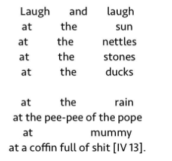

In general understanding, poetry comes to be separated from ordinary language through its construction as marked speech. Through specific formal qualities like meter, particular combinations of words morph into a different temporal realm, away from informative communication of daily life, which has been employed throughout history for didactic, legal, or propagandist purposes. Poetry returns to its etymology of poiesis in this regard, it is a making. As hierophants with a privileged access to a more supreme knowledge, the social authority of the bard suspends belief in Plato’s noble lie, and plunges the audience into a separate world governed by an alien logic.
It is no surprise, therefore, that poetry is intimately connected to religion and philosophy, for these attempts all point to a ‘mystery of existence’, often described as inspired by metaphysical feelings, which would then somehow be the drives behind culture. Man should constantly go beyond himself, as if he were faced with a greater force whose message, reduced to a whisper in his ear, repeats that he may never reach similar proportions. And yet he must strive to make poetry, for there is no other defense against annihilation than existing in the Word. Without that he can know no God, have no ‘salvation’ from non-being.
With the rise of more profuse communication, information shields us from engaging with what’s behind the veil of ‘existence’ — and the abyss surrounding it.
Thus the death of poetry.
Barren Magazine, a poetry journal, recently sacked its editor, Danielle Rose, for tweeting that the general population has no interest in poetry. And yet, Danielle was wrong: poetry thrives on, in Rupi Kaur’s Instagram posts and woke infographics. Poetry has moved on to enunciating small-scale truisms about the generalities of a specific subcategory of Western experience — whoever pretends otherwise knows nothing about poetry. But poetry does not die a natural death — it can only be murdered. Metaphysics did die however, and it died like a dog — but its guilt survived, as the last man.
We do not seek to revive popular metaphysical feelings, but to destitute onto-theology — there is no ultimate source of power from which to affirm our becoming. And so we’re rethinking poetic function, no longer compelled to save ourselves from nothingness, as all artistic actions were always already arbitrary — but they can no longer, and they will no longer communicate any meaning or represent any objects. The role of poetry as a universalizing social force is long gone.
Poetry defined by what it can do in the world, how it interacts with other forces and the poietai of becoming — we call this non-poetry.
Non-poetry leaps past the aporia of Burroughs criticized in the first chapter of Deleuze and Guattari’s A Thousand Plateaus, a writer whose radical alienness always brought him back to the unity of the world he was attempting to escape. This flight was a negation. When all significance is taken away, only pure form remains — pure form to be filled with anyone’s own meaning. To try and make sense of patterns and relate it to those they have already familiarized and appropriated — but isn’t this just what Rupi Kaur does?
This is why non-poets choose singularities from ordinary lives as a stratum — singularities that are not representations, nor relatable generalities. This non-poetry creates a process of consistency, introducing difference beyond difference. A grander non-principle, beyond the identity of difference, abolishing the present state of things. There is indeed an Outside – the local Outside, coming about horizontally, since there is no unity by which a non-poem could be grasped.
By intensifying events from singular existences, non-verses serve to vandalize ourselves as well.
A non-poem is not a plane of autonomous phenomena created by the author. What’s in the non-poem isn’t a phenomenon, but rather, a planomenon. Let’s speak of a non-poem as a plane of indeterminacy between authoriality and text. An indefinite extension of the threshold.
The author isn’t dead — that’s why we kill him.
We had to overcome our subjectivity, we had to get rid of ourselves. That’s why I killed myself a week ago; primitive accumulation had to fuck through the faucet.
From the gesture of remaking to that of making, that is, from a non-poem to its reading, a connection has been established, and the priest, once preaching from up high to the populace, now hangs from the lampposts. Our power is elsewhere. The original magical qualities of poetry are rendered back into an apparent paradox — an inhumanity that relentlessly draws the act of reading into another making.
We reject automatic writing and the uninhibited praise of ‘intuition’ found in surrealists and futurists. By wildly destratifying and discarding all paradigms, without destituting them, they strapped themselves on a ride towards annihilation: the Italian futurists became fascists, and some of their Polish counterparts, mouthpieces for socrealism.
Instead, we destitute the creator figure. From the Modernist author as an alienated, idiosyncratic subject, to its Postmodernist collapse into an impersonal figure traversed by anxious intensities — it’s the creator that needs to go. Instead of the postmodernist plane of impersonal affects collected under the merchant logic of authoriality—what is called poetry today—a non-poem occurs as a temporal space between two gestures of making. It’s a becoming-machine: not bound by concrete rules, but rather guided with a local axiomatic, a non-poem extends singular vicissitudes of space and time in their consistency.
Suppose an inbox, and unanswered emails — what of the tendency of the
rate
of
profit?
Dear Friends and Colleagues — what if we refused to communicate? Their message had found us deeply unwell and quickly deteriorating; we are tired of words, we are sick of language. And yet: we are happy to announce we will be providing a use-value for your inbox.
Following
Up
On this, we would like to highlight
perhaps a new path of language unleashed.
Warm regards,
The critique by weapons
But if non-poetry does express a voice from immediate experience there will remain a specific system of signs — and like lone islands, its words would be exchanged exclusively within a social milieu. Lone islands? — no, peninsulas. Desiring a greater commonality always returns utilitarianism to our lives.
We seek to arm ourselves first with the necessary weapons for the necessary critique. but poetry remains a form of making.
Consider Bataille’s poem Rire (Laughter).

A preliminary analysis shows that the verse lays out a trap. Through the subject matter reminiscent of a pastoral, with the first five lines’ staccato rhythm which is reinforced by the formatting. Words combine but they are apart in space. This quality is overridden by lines 7 to 10, the reader is met with a deluge of affects; the idyllic picture of nature is filled in. All in all, they are forced to acknowledge what sense-engagement and spatialities can do, both to offer imagery and for them to question the basis on which it was founded.
There are no rules to abide by in non-poetry, and any constrictions are broken through by greater ambitions. We only took ensembles to dissolve them. There is no representation of non-poetry, nor does it have an ideal. Moments, merely moments — leaps into life. And we followed suit.
minutiae, tree amidst us,
itself
these i s s u e s point similarly.
overlooked sections. vicious sections
in life
and mine thought makes flight.
soon hope enquiries disappearance,
in the world.
falling-singularities reference the figure,
they mark upon the same field,
vulnerable. further on territories and Work
walls and end signs.
past allows, Wonder, love, a parts,
together with logos and creases
in the means.